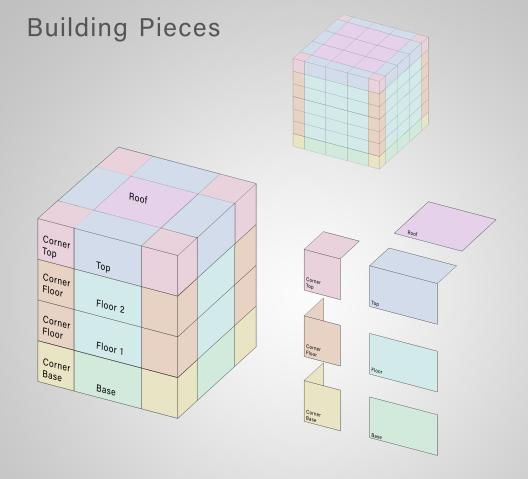
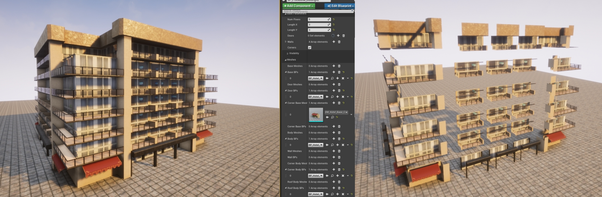
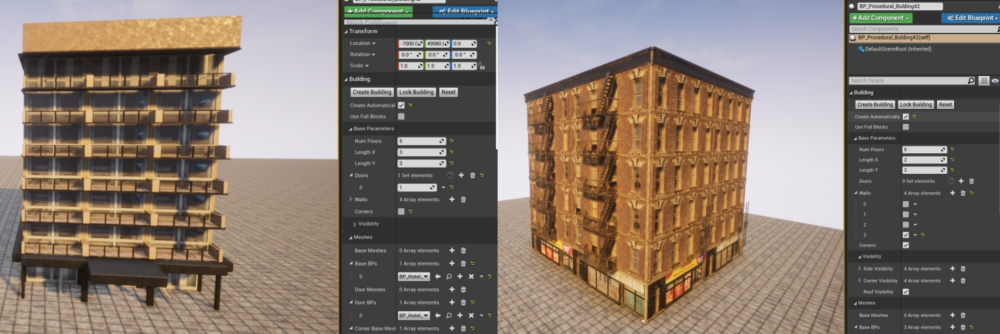

Customizing Maps: Procedural Buildings
Procedural buildings
The procedural building tool allows you to create rectangular buildings composed of different levels. Each level is built using a configurable array of meshes or a single blueprint. If an array of meshes is used, each mesh will be repeated along the level at random to provide variety. The meshes are created once and each repition will be an instance of that mesh. This improves performance of your map.
Building structure
To get started on your building:
- In the Content Browser of the Unreal Engine editor, navigate to
Content/Carla/Blueprints/LevelDesign. - Drag the
BP_Procedural_Buildinginto the scene.
In the Details panel, you will see all the options available to customize your building. Every time a change is made here, the building will disappear from the scene view, as the key meshes are updated. Click on Create Building to see the new result, or enable Create automatically to avoid having to repeat this step.
The key meshes are pieces of the building's structure. They fall into four categories:
- Base: The ground floor.
- Body: The middle floors.
- Top: The highest floor.
- Roof: The roof that covers the top floor.
For each of them, except the Roof, there is a mesh to fill the center of the floor, and a Corner mesh that will be placed on the sides of the floor. The following picture represents the global structure.

The Base parameters set the dimensions.
- Num Floors: Floors of the building. Repetitions of the Body meshes.
- Length X and Length Y: Length and breadth of the building. Repetitions of the central meshes for each side of the building.

Structure modifications
There are some additional options to modify the general structure of the building.
- Disable corners: If selected, no corner meshes will be used.
- Use full blocks: If selected, the structure of the building will use only one mesh per floor. No corners nor repetitions will appear in each floor.
- Doors: Meshes that appear in the ground floor, right in front of the central meshes. The amount of doors and their location can be set.
0is the initial position,1the next base repetition, and so on. - Walls: Meshes that substitute one or more sides of the building. For example, a plane mesh can be used to paint one side of the building.

On the right, a building with a wall applied to one side of the building. The wall is a texture with no fire escape.
Next steps
Continue customizing your map using the tools and guides below:
- Implement sub-levels in your map.
- Add and configure traffic lights and signs.
- Customize the road with the road painter tool.
- Customize the weather
- Customize the landscape with serial meshes.
Once you have finished with the customization, you can generate the pedestrian navigation information.
If you have any questions about the process, then you can ask in the forum.